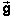

for force, are
introduced in the context where the quantities arise.
for force, are
introduced in the context where the quantities arise.
The system of notation used in MAP is unambiguous, at least within a given context. The system achieves this by using different symbols for different quantities. It conforms with what you will find in general physics texts, with some minor differences. Most of these differences occur in the context of vectors where many textbooks use an ambiguous notation in order to simplify the notation. An unambiguous notation can indeed get cumbersome when dealing with vectors in one dimension. What MAP does in this case is described under Vector Notation below.
The notation used in MAP is described here in detail for two
special topics: Kinematics and Vectors. Symbols for physical
quantities from other areas, e.g., E for energy and for force, are
introduced in the context where the quantities arise.
for energy and for force, are
introduced in the context where the quantities arise.
Time instant: t
Time interval: Δt = t2 - t1, where t2 > t1
Time elapsed: Δt
Note: "time elapsed" is a time interval and should be denoted "Δt" in general; however, if one measures the time elapsed from the moment t = 0, then Δt = t - 0 = t so that "t" can be used in this case to denote time elapsed; in general, "t" and "Δt" are different
Change in quantity Q between time instants
t1 and t2 where
t2 > t1:
 ΔQ =
Q(t2) - Q(t1), where
t2 > t1
ΔQ =
Q(t2) - Q(t1), where
t2 > t1
Distance traveled: s
Straight-line distance between two points and magnitude of a displacement: d
Position vector: 
Scalar component of the position vector in one dimension: x if the motion is along an x-axis, y if the motion is along a y-axis, etc.
Scalar components of the position vector in two dimensions: x and y, if x and y axes are used to coordinatize space
Note: generally, the scalar components of a two-dimensional
vector  are denoted
vx and vy, but the components of
the position vector are simply x and y, not
rx and ry
are denoted
vx and vy, but the components of
the position vector are simply x and y, not
rx and ry
Displacement:  or
Δ
or
Δ
Be careful: displacement is denoted or Δ, not Δ; a change in displacement, which
would be denoted Δ, is a concept that has hardly any applications; one is
usually interested only in displacement, which is a change in
position
Speed: v
Velocity:
Average speed over a time interval Δt: vav = s/Δt
Average velocity over a time interval Δt: av = /Δt =
Δ/Δt
Note: average velocity should not be denoted
Δ/Δt; see
preceding Note
Acceleration: 
Average acceleration: av = Δ/Δt
Average time-rate-of-change of speed over a time interval Δt: Δv/Δt
Time-rate-of-change of speed: dv / dt
Note: there is no special name for the time-rate-of-change of speed; we certainly should not call it "acceleration" because acceleration is the time-rate-of-change of "velocity", which is a very different concept
Acceleration due to gravity: 
Magnitude of the acceleration due to gravity: g
Note: the symbol "g" denotes a positive quantity, g = 9.8 m/s2, whether the y-axis is directed upward or downward. Also, don't refer to g as "gravity". "Gravity" is the general phenomenon. There is an "acceleration due to gravity", a "force due to gravity", a "potential energy due to gravity", etc. These different concepts should not all be referred to by the one word "gravity".

Generalities
In MAP, vectors are denoted by symbols in boldface, with an arrow
above the symbol, e.g., for the acceleration vector. There are several other
examples in the preceding section Kinematics.
Several recent textbooks use the same notation. Generally, textbooks use boldface, but not always with an arrow. In handwriting, you should use an arrow or some other device to distinguish vectors from scalars.
The parenthesis notation
(vx,vy) denotes a vector with scalar components
vx and vy;
Distinguish between the scalar component vx and
the vector component x of a vector .
The magnitude (absolute value) of a vector is denoted by v, i.e., by the
same letter but in plainface and without an arrow above the letter.
Another notation for the magnitude of a vector is ||.
The notation || for the magnitude of a vector can always be used, but there are
examples where the plainface notation without arrow should not be used
because it would lead to an ambiguity. E.g., the magnitude of the
vector component x should be denoted |x|, not
vx, because vx denotes the scalar
component. |x| may differ from vx by a
sign and should therefore not be denoted by the same symbol.
Vectors in one dimension.
In dealing with vectors, one must distinguish between four kinds of quantitities:
In one dimension, the vector component of a vector is identical with the vector itself. Therefore, we will not consider it in the present context of vectors in one dimension.
The following examples describe the MAP notation for vectors in one dimension for which an x-axis has been defined. Kinematical quantities are used to illustrate the general system.
Velocity:
Velocity scalar component: vx
Speed (magnitude of velocity): v or ||
Simplification of notation and terminology: It is common to write v instead of vx; this notation is ambiguous because v and vx are not the same; the speed v is a positive quantity while the velocity component vx can be both positive and negative.
In a given context, vx may always be positive; in this case, one can safely write v instead of vx; however, it would be good to point out such change in notation.
Even in a context where vx can be negative, one may want to write v instead of vx, to use a less cumbersome notation. This is fine if the change in notation is clearly pointed out.
The same comments apply to the distinction between a and ax in the case of acceleration.
It is common to refer to vx as "velocity", rather than "x-component of velocity". This is fine too if this usage is pointed out so that it is understood that this is done for brevity's sake. Similarly, one refers to ax as acceleration rather than x-component of acceleration.
In one dimension, many books use the same notation for a vector, its scalar component, and its magnitude. This makes things look simple, but can be very misleading because even in one dimension these quantities behave quite differently.
MAP distinguishes notationally between these three kinds of
quantities if necessary, although doing so may be tedious, but does
follow the simplified notation in which the same symbol v is
used to denote either the vector or the vector component x or the magnitude || of the vector if there is no ambiguity in the given
context. If MAP does so, this is clearly pointed out. You should
follow the same practice.
Sign conventions.
Sign conventions and signs in general can cause a lot of heachache and be a source of error. The following comments apply to one-dimensional motion along an x-axis and will distinguish between a vector, its scalar component, and its magnitude.
Let's consider velocity as an example. Strictly speaking, the velocity vector is neither positive nor negative. Vectors are not numbers. In particular, they are not positive or negative, which are properties of numbers. Instead, vectors have magnitude and direction.
In contrast to the vector ,
its x-component vx is a number and it
therefore makes sense to talk about it being either positive or
negative.
In 1-d, one can establish an isomorphism between vectors and their scalar components relative to a given x-axis: the vectors can be in the positive or negative x-direction and their x-components are correspondingly positive or negative numbers. This makes it possible to think of the scalar components as the vectors themselves. Still, there is an important distinction between vectors and their scalar components even in one dimension. See the following two paragraphs.
Two isomorphisms between vectors in one dimension and
numbers are possible, corresponding to the two directions in which the
x-axis can be chosen to point. For a given vector , whether
vx is positive or negative depends on how the
positive direction of the x-axis is defined. If the vector
points in the
positive x-direction, then vx is positive.
If the direction of the x-axis is reversed, this does
not affect the vector , but changes the sign of vx.
Vectors are absolute geometric quantities representing physical quantities that don't depend on how we happen to define our coordinate system. If a truck has a velocity with which the truck is moving towards a big tree, then this velocity does not depend on whether we define the positive x-direction as pointing towards the tree or away from the tree. In either case, the velocity is towards the tree. However, in the former case, vx will be positive, while in the latter case vx will be negative.
In general, in one or more dimensions, the scalar components of vectors have signs that depend on our choice of axes. Vectors don't have signs and don't change if we change the axes. In working with components, it is crucial that it is clear in which direction an axis points. This may be clear from the context. Otherwise, it must be stated. In the case of vertical motion, sometimes the y-axis points upward, sometimes downward. One must state clearly which direction the y-axis points. All signs are relative to this choice.
The sign business is critical in the context of acceleration. Let us refer to ax as "acceleration" and vx as "velocity" in the following.
Suppose the positive x-direction is to the right. Suppose a truck is moving to the right while slowing down. In this case, the velocity vector is pointing in the positive x-direction and the acceleration vector in the negative x-direction so that the velocity vx is positive and the acceleration ax negative.
Now suppose we let the positive x-direction be to the left, while not changing the truck's velocity and acceleration vectors. Then the truck's velocity vx is negative and its acceleration ax positive. Thus, the truck has positive acceleration while slowing down!
Whether an acceleration ax is positive or negative does not tell us anything about whether the speed is increasing or decreasing unless we know how the x-axis is oriented.
Presenting answers about vectors
In general, when the answer to a question calls for a vector, the answer should be stated in the form:
= (magnitude, direction)  or
or  = (components)
= (components)
In one dimension, an answer could be
= 15 m/s in the negative x-direction.
If the question asks for the component, the answer could be in the form
vx = -15 m/s
where it should have been made clear at some point in what direction the x-axis points.
"vx = -15 m/s" could also be presented as "v = -15 m/s" if it has been stated clearly that v is being used for vx so that v does not denote speed.
In two dimensions, if the answer calls for a vector, the answer can be given either in the form "(magnitude, direction)" or in the form "(vx,vy)" using components. In the latter case, the choice of axes must be pointed out. In the former case, the way in which the angle is defined must be made clear.